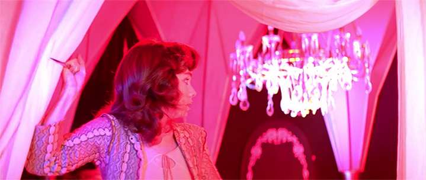
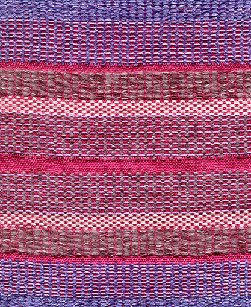
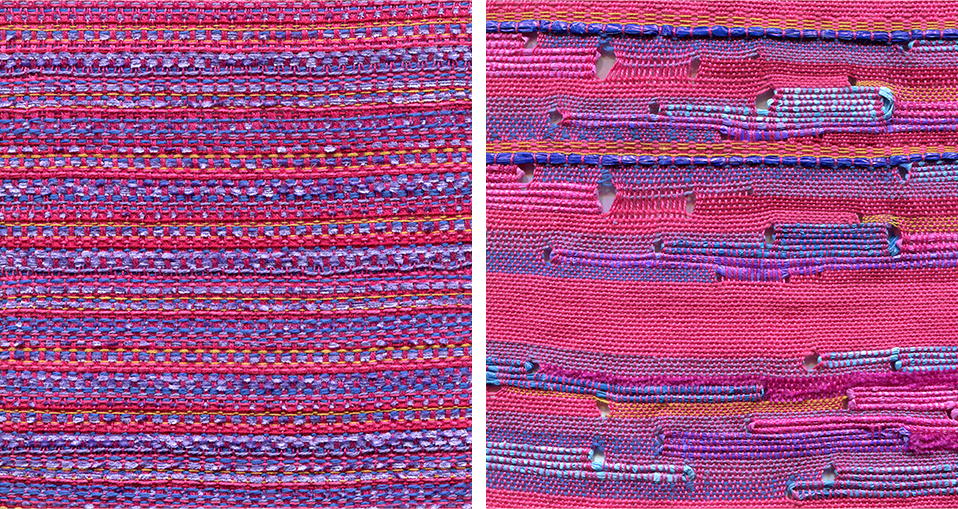

Stripe Woven Designs
Inspired by 70s cult horror film Suspiria by Dario Argento.
Intended for residential upholstery. Hand woven on a floor loom.
The last sample with eyelets was partially woven with strips of dyed plastic bags.


